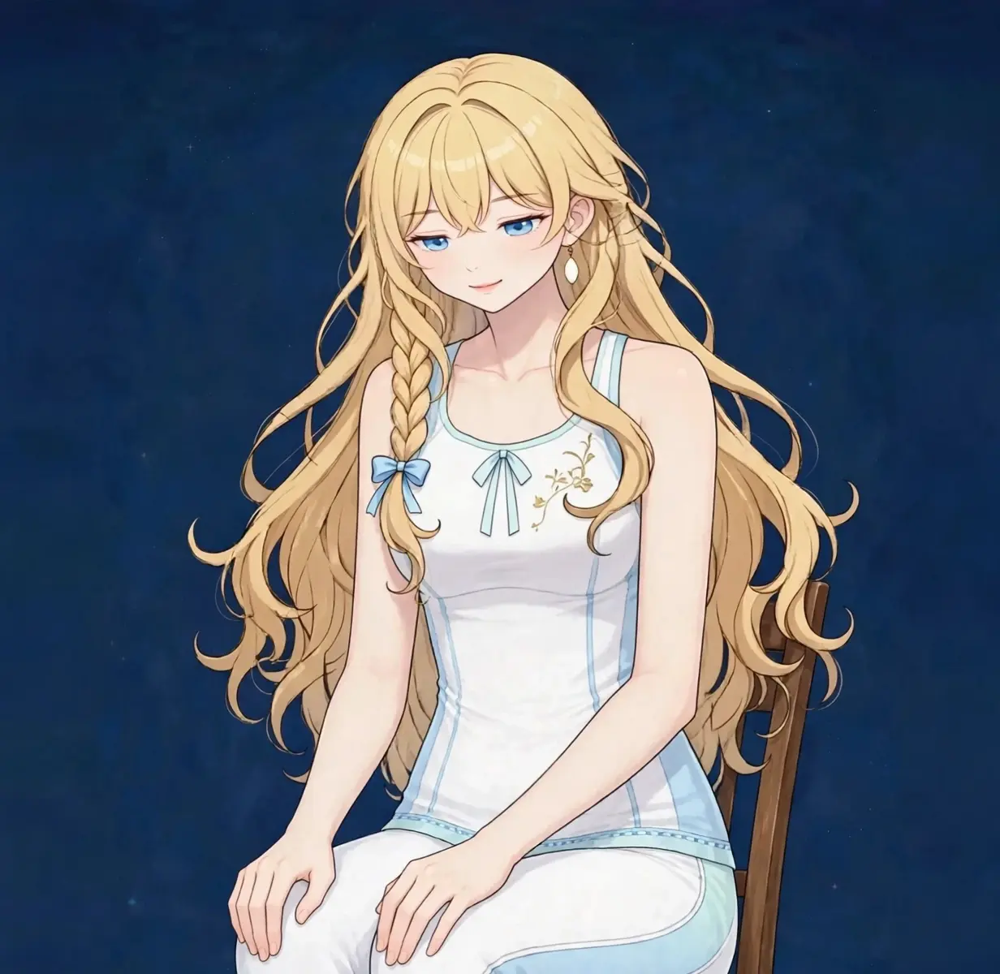

梅田で座りっぱなしの腰・お尻ケア｜長時間座ったあとの腰とお尻の張りに疲労・張り

夕方、椅子から立ち上がろうとしたら腰がすぐには伸びない。お尻の奥が重く、歩き出すまで数歩かかる——長時間座る仕事では、腰とお尻に「座り続けた負担」がそのまま残ります。動いたときに出る重さが、このお悩みの目印です。
座ったあとの腰・お尻の重さはどんな状態か
長時間座ったあとの腰・お尻の重さは、座り姿勢で腰まわりの筋肉が同じ状態で固まり、お尻の筋肉が体重で圧迫され続けた結果として表れます。座っている間は楽でも、立ち上がる瞬間に腰が伸びにくい、お尻の奥が重いと感じるのが特徴です。
ポイントは、座り姿勢では腰だけでなくお尻も働き続けていることです。お尻の奥の筋肉は座る姿勢の土台であり、圧迫と緊張が同時に続きます。さらに太ももの裏側が縮こまることで、立つときに腰への引っ張りが増えます。腰・お尻・太もも裏を一続きで見ることが大切です。
こんなサインはありませんか？ — 座りっぱなしの腰・お尻のチェックリスト
- 夕方、立ち上がるときに腰がすぐ伸びない
- お尻の奥に重さや鈍い張りを感じる
- 座っている時間が長い日ほど帰りがつらい
- 椅子の硬さで腰の疲れ方が変わる
- 太ももの裏側が突っ張る感じがある
- 立って歩き出すと少しずつ楽になる
- 在宅勤務の日は特に腰にくる
- 休日に座りっぱなしで過ごすと翌日腰が重い
当てはまる項目が多いほど、負担がたまりやすい生活が続いている可能性があります。次の「要因」と見比べて、どこに負担が集まっているか確かめてみてください。
座りっぱなしの腰・お尻につながりやすい要因
- 座り姿勢の固定：同じ姿勢が続くと、腰まわりの筋肉は動かないまま固まります。90分以上座り続ける日は、立ち上がりの重さが特に出やすくなります。
- お尻の圧迫：座面に体重がかかり続けることで、お尻の奥の筋肉は圧迫され続けます。クッションのない硬い椅子では影響が大きくなります。
- お尻が前に滑る座り方：椅子に浅く腰掛け、お尻が前に滑る「仙骨座り」は、腰の丸まりとお尻への圧を同時に増やします。無意識のクセとして定着しやすい座り方です。
- 太もも裏の縮こまり：座り姿勢では膝が曲がり、太ももの裏側は縮んだ状態で固定されます。この縮こまりが、立つときの腰の引っ張りにつながります。
- モニターと椅子の高さの不一致：椅子と机の高さが合わないと、骨盤の角度が崩れて腰に負担が偏ります。在宅勤務の環境では特に起こりやすい要因です。
- 運動不足による支えの低下：お尻と体幹の筋肉が働く機会が減ると、座り姿勢を支える力そのものが落ちます。支えられないから固める、という循環が腰の重さを固定します。
図1｜座りっぱなしで負担が集まる腰・お尻の筋肉（背面）

東洋医学から見た考え方
東洋医学では、腰は「腎（じん）の府」と呼ばれ、体の土台の状態が表れる場所と捉えます。長時間座って動かない生活は、この見立てでは下半身の巡りを滞らせ、腰まわりに重さをためやすい過ごし方として考えられます。
腰からお尻にかけては膀胱経のラインが通り、足の裏まで下ります。施術では腰・お尻・太ももの裏側までを一続きにほぐし、座り姿勢で滞った下半身の巡りを意識してケアします。
代表的なツボ
座りっぱなしの腰・お尻のケアでよく挙げられる、腰まわりのツボを紹介します。お尻の奥は手が届きにくいため、ボールを使ったケアが取り入れやすい場所です。
図2｜腰まわりのツボの位置（背面）
おすすめ施術
美容整体＋オイルマッサージ
腰・お尻・太ももの裏側を一続きにほぐし、座り姿勢で固まった下半身のバランスを整えます。お尻の奥の張りは自分では届きにくい場所のため、施術でこそケアしやすい部分です。
進め方は、まずお尻まわりの張りの左右差を確認し、固さの強い側から丁寧にほぐしていきます。腰だけでなく、骨盤の傾きや座り方のクセも一緒に確認します。
椅子の座り方の目安や、仕事の合間に挟める小さな動きもお伝えします。夕方以降の営業のため、座り仕事の日の帰りにそのまま寄る使い方もできます。
自宅でできるセルフケア
座りっぱなしのセルフケアは「立つ・お尻をほぐす・太もも裏を伸ばす」の組み合わせが基本です。痛みやしびれが出る場合は無理をせず中止し、脚に力が入りにくいなどの症状がある場合は医療機関にご相談ください。
- 1．1時間に一度の立ち上がりタイマーを目安に、1時間に一度は立って数歩歩きます。座り続ける時間を区切ることが、いちばん効果の大きい対策です。
- 2．お尻ボールほぐし椅子に座ったまま、テニスボールをお尻の下に置いて小さく体を揺らします。左右30秒ずつ。奥の張りに届きやすいケアです。
- 3．太もも裏ストレッチ椅子に浅く座り、片脚を前に伸ばしてかかとをつき、背筋を伸ばしたまま少し前へ倒します。左右20秒ずつ行います。
- 4．座り直しの習慣お尻が前に滑っていたら、一度立って座り直します。お尻の骨（坐骨）で座る意識を取り戻す、小さなリセットです。
図3｜セルフケア「お尻ボールほぐし」の手順
場面別の注意
在宅勤務の日
自宅の椅子と机は高さが合っていないことが多く、腰への負担が増えます。クッションや台で高さを調整し、座り直しの回数を増やしてください。
会議が続く日
立ち上がれない時間が続く日は、座ったままのお尻ボールほぐしや、足首回しを挟むだけでも違います。
長距離移動のあと
電車や車の座りっぱなしも同じ負担です。降りた直後に太もも裏ストレッチを挟むと、腰の重さが残りにくくなります。
受診の目安
次のような場合は、サロンでのケアの前に医療機関への受診をおすすめします。
- 腰の痛みに加えて、脚にしびれや力の入りにくさがある
- お尻から脚の後ろに電気が走るような痛みがある
- 排尿や排便の感覚に変化がある
- 転倒や事故のあとから腰の痛みが始まった
- 痛みが日に日に強くなっている
当店は医療機関ではなく、診断は行いません。迷うときは、まずかかりつけの医療機関にご相談ください。
よくある質問
Q．腰の重だるさのページとの違いは？
腰の重だるさのページは腰全般を、このページは「長時間座ったあと」という場面に絞り、お尻の奥の張りまで含めて解説しています。立ち上がりの瞬間につらさを感じる方は、こちらのページが合います。
Q．お尻までほぐしてもらえますか？
はい。腰・お尻・太ももの裏側は一続きのラインとしてケアします。タオル掛けを徹底して行いますので、施術範囲や圧の強さで気になることがあれば当日お伝えください。
Q．座り仕事でも効果は続きますか？
座る生活そのものは変わらないため、施術と合わせて「座り方と立ち上がりの習慣」を変えることが大切です。施術の際に、椅子の座り方の目安も具体的にお伝えします。
Q．ギックリ腰の直後でも受けられますか？
強い痛みがある直後は、まず医療機関への受診をおすすめします。痛みが落ち着いてからのケアとしてご相談ください。
関連するお悩みページ
関連する経絡ページ
ご予約
ステラポラリス（大阪・梅田／女性専用）｜オイルマッサージ 90分 10,000円｜月〜土 17:00〜22:00・完全予約制
ご予約はLINE公式アカウントで受け付けています。希望の日時と、気になる場所を送ってください。